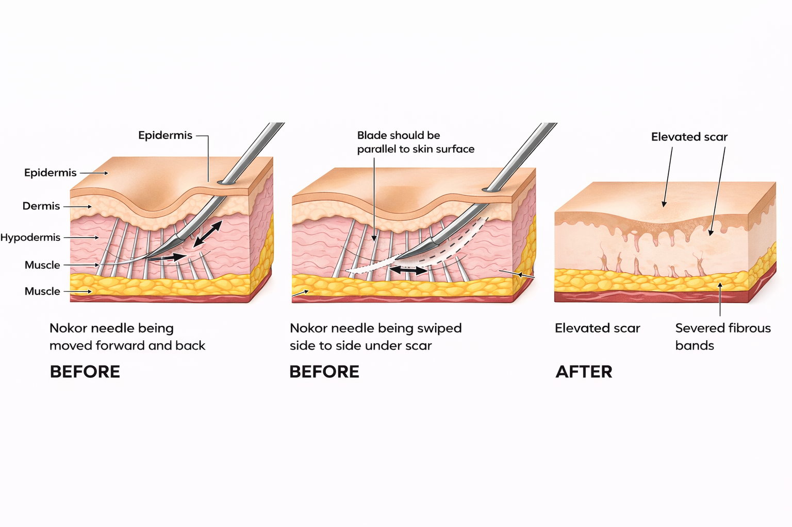
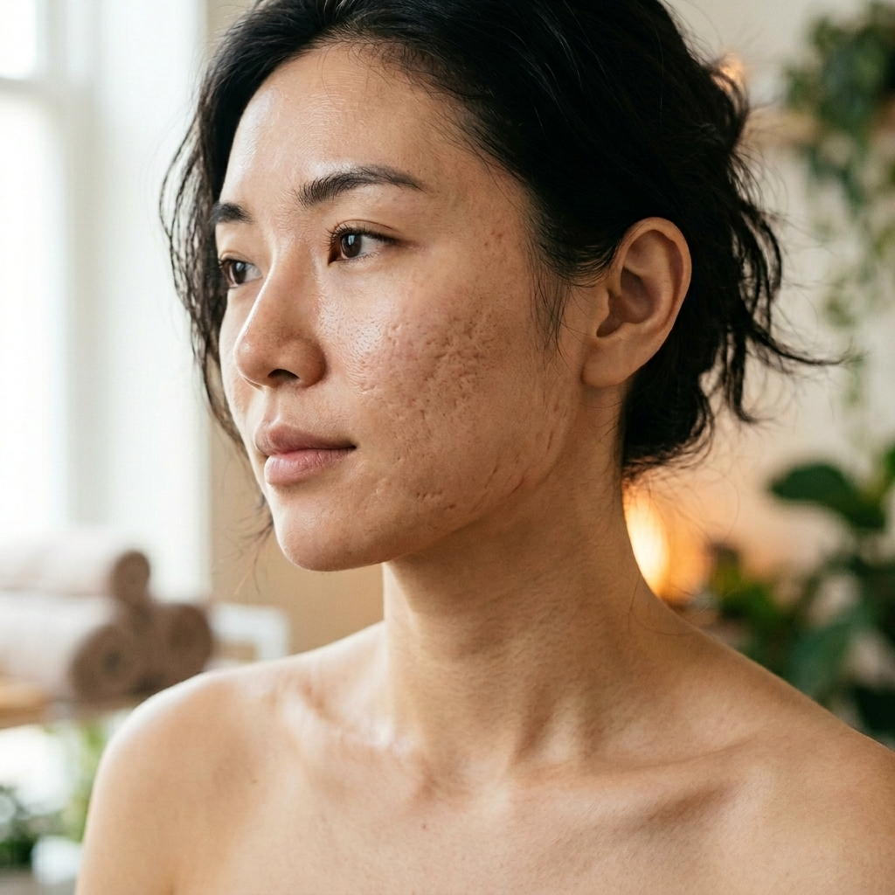
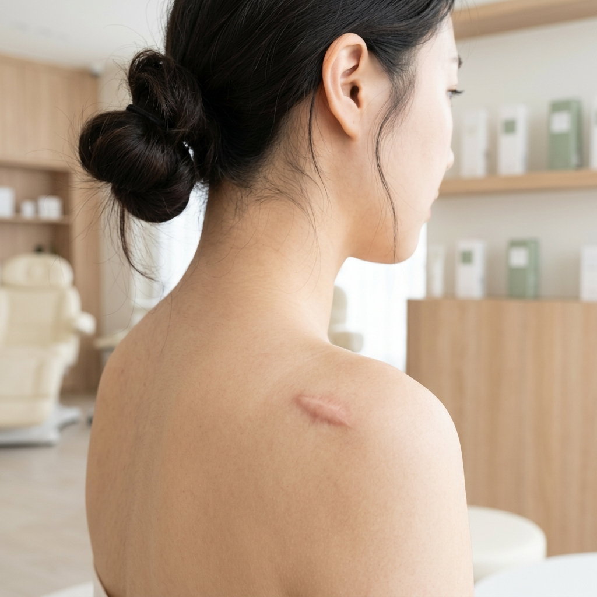

K-Beauty Medspa • Carrollton HQ
All treatments at SuA Glow are performed under medical oversight. Results are individualized based on patient goals and assessment.
Korean-inspired structural remodeling. Multi-modality approaches to soften acne scars, refine texture, and restore skin confidence.
The Seoul Remodeling Philosophy
Scars are not just surface-level concerns; they involve structural changes deep within the dermal matrix.
At SuA Glow, Korean Scar Treatment utilizes a multi-modality approach. By combining specialized techniques like microneedling, structural subcision, and regenerative boosters (like PN or Exosomes), we aim to untether deep scars and stimulate new, healthy tissue growth for a smoother, more even surface.
Precision Skin Texture Focus
All Scar Treatments at SuA Glow are performed by Sophia Yang, PA-C under appropriate medical oversight and delegation by supervising physician Dr. Adam Yang in accordance with Texas law and established clinical protocols.
The Strategic K-Beauty Approach
Using advanced microneedling technologies to safely trigger the skin’s natural healing cascade and generate new, organized collagen.
For deep rolling or tethered scars, subcision techniques are used to release the fibrous bands pulling the skin downward.
Integrating Polynucleotides (PN) or Exosomes to provide the biological building blocks necessary for faster, higher-quality tissue repair.
Single treatments rarely cure severe scarring. We layer techniques specifically customized to your unique scar types and depths.
Personalized For Your Skin
Gradually softening the appearance of irregular, pitted, or raised skin texture.
Helping tethered scars rise closer to the surrounding skin surface for an even plane.
Addressing the post-inflammatory hyperpigmentation (PIH) often left behind by acne.
Collagen induction naturally tightens the appearance of enlarged pores over time.
Rebuilding the health of compromised skin to prevent further damage and inflammation.
Achieving a smoother canvas so you feel confident wearing less makeup.

Subcision Tissue Release ProcessIn Korean aesthetics, severe scar treatment is rarely approached with a single, highly aggressive laser treatment that requires massive downtime. Instead, it is a layered process.
By combining mechanical remodeling (like microneedling or subcision) with biological support (like PN or exosomes), the skin heals better, faster, and with higher quality collagen.
Seoul Precision. Structural Repair.
Acne scars come in many forms—ice pick, boxcar, rolling, and tethered. One device cannot treat them all effectively.
At SuA Glow, we visually map your scarring and customize a multi-modality treatment plan. We are honest about expectations: scar revision is a progressive journey, not an overnight fix, but significant improvement is highly achievable.
We select the exact tool required for the exact depth and type of scar we are treating.
We support every procedure with advanced biologicals to maximize your skin's healing response.
A commitment to safe, consistent, and cumulative results over a carefully planned timeline.
Thorough mapping of your scar types (rolling, boxcar, ice pick) to determine the necessary modalities.
A customized protocol that may span several months, combining microneedling, subcision, or boosters.
Expect redness and mild swelling post-treatment; biologicals help accelerate recovery significantly.
A progressive softening of scar edges, lifted depressions, and a dramatically smoother overall texture.
Comprehensive Treatment Planning

Pitted, rolling, boxcar, or ice pick scars resulting from breakouts. We use a layered approach of collagen remodeling, subcision, and hydration support to gently lift depressions and smooth uneven texture without excessive trauma.
Scars resulting from surgical procedures or trauma. We focus on controlled collagen induction and breaking down fibrous tissue to soften the scar's appearance, reducing redness and blending it with surrounding healthy skin.
Tears in the dermal matrix resulting from rapid stretching. Using targeted microneedling and advanced skin-quality boosters like Polynucleotides (PN), we stimulate new collagen to improve the texture and tone of stretch marks.

Overgrowths of scar tissue that rise above the skin surface. Treatment focuses on careful clinical assessment and specialized medical approaches to calm the active tissue and safely reduce its prominence.
Many traditional scar treatments focus only on “aggressive resurfacing.” Korean aesthetic medicine often takes a more strategic approach: Treat the skin repeatedly. Treat the skin gently. Treat the skin intelligently.
The focus is long-term skin quality improvement — not overly aggressive procedures that can increase inflammation, prolonged downtime, or pigment concerns. At SuA Glow, we prioritize skin healing behavior just as much as the scar itself. Because healthier skin often heals better.
More aggressive treatment does not always mean better. Patients with Asian skin types and melanin-rich skin often require more thoughtful scar treatment planning due to increased risk of post-inflammatory hyperpigmentation (PIH), prolonged redness, and delayed barrier recovery.
SuA Glow frequently treats patients with Asian skin types and melanin-rich skin using customized treatment approaches designed to support skin health while reducing unnecessary inflammation. Our philosophy prioritizes controlled collagen remodeling, hydration support, and gradual skin improvement over time.
Microneedling remains one of the most widely used scar treatments globally for improving acne scar appearance, enlarged pores, and overall skin smoothness. At SuA Glow, Korean-inspired microneedling protocols focus on controlled precision rather than excessive trauma. Because more aggressive is not always better.
Our scar treatment approach emphasizes customized depth strategies, gradual collagen remodeling, and combination skin-quality planning. Glass skin starts with texture.
Scar revision is a process that relies on your body's collagen production cycle. Most patients require a series of 3 to 6 sessions, spaced 4 to 6 weeks apart, depending on the severity and depth of the scarring.
In aesthetics, the goal of scar revision is significant improvement, not total erasure. We aim to soften harsh edges, lift depressions, and blend the scarred area to closely match the surrounding healthy skin texture.
Subcision is a minor procedural technique used for tethered or rolling scars. A micro-needle is used beneath the surface of the skin to gently break the fibrotic bands pulling the scar down, allowing the skin to lift and smooth out.
We prioritize your comfort. A strong topical numbing cream is applied before treatment, and we utilize specialized techniques to ensure the process is as comfortable and tolerable as possible.
Instead of focusing only on “stronger” treatments, Korean scar treatment philosophy prioritizes controlled collagen remodeling, hydration support, barrier health, and gradual texture refinement. The goal is improving how the skin heals over time, which is especially important for sensitive or melanin-rich skin.
Scar improvement is usually gradual. Many collagen-focused treatments work over a period of time as the skin remodels and rebuilds support beneath the surface. Some patients notice early texture improvement within weeks, while deeper remodeling may continue over several months.
Yes, texture-focused treatments may help improve the appearance of enlarged pores by supporting collagen remodeling and overall skin quality.
More aggressive treatment is not always better. While stronger resurfacing lasers can improve some scars, overly aggressive treatment may also increase prolonged redness, pigmentation concerns, and barrier disruption. This is especially important for darker skin tones and patients prone to hyperpigmentation.
K-Beauty Medspa • Carrollton HQ
All treatments at SuA Glow are performed under medical oversight. Results are individualized based on patient goals and assessment.